原型链
什么是原型链?
因为原型对象也是一个对象,只要是对象就会存在自己的原型对象,所以原型对象也有自己的原型对象,通过这样一级一级查找出的原型,就叫做对象的原型链
function Person () {}
// 一旦定义了函数, 那么就有两个部分: 构造函数, "神秘"对象Person.prototype
// 实例对象p
var p = new Person();
// 原型链:p --> Person.prototype( p.__proto__ ) --> Object.prototype --> null
Person.prototype是 实例 p 的原型对象, 使用__proto__可以访问对象的原型对象Person.prototype的 原型对象是Person.prototype.__proto__Person.prototype.__proto__里的constructor是Object. 所以Person.prototype.__proto__就是Object.prototypeObject.prototype.__proto__是 null. 因此表明Object.prototype就是顶级.
对象的原型链
普通实例对象的原型链结构图
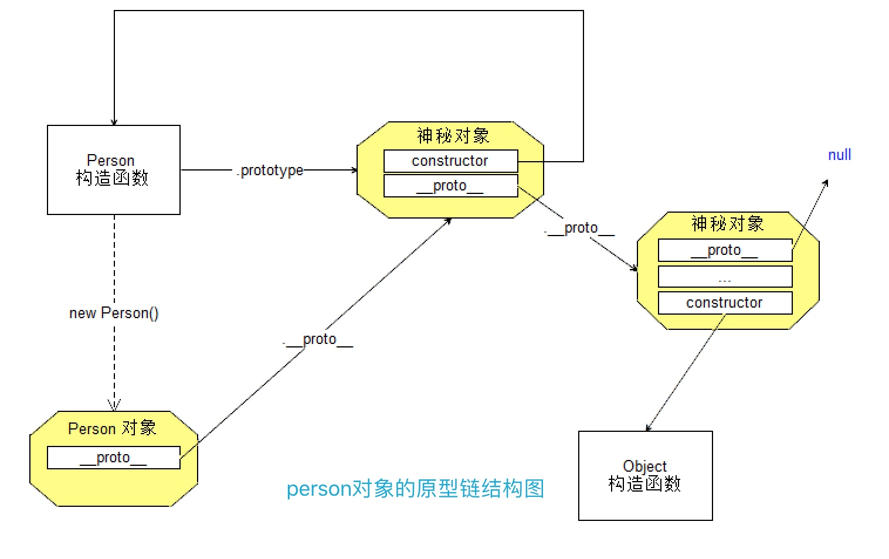
内置对象的原型链
// 数组
[] --> Array.prototype --> Object.prototype --> null
// 正则
/./ --> RegExp.prototype --> Object.prototype --> null
// 时间
new Date() --> Date.prototype --> Object.prototype --> null
// 对象
{} --> Object.prototype --> null
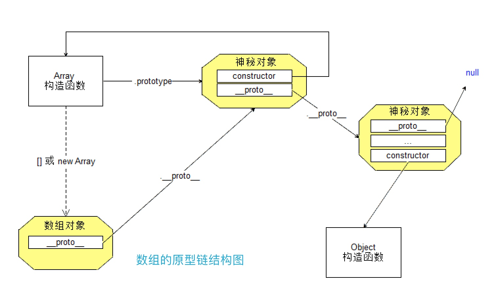
原型链结构练习
// 根据这段代码画出stu的原型链结构图
function Person( name, age, gender ) {
this.name = name;
this.age = age;
this.gender = gender;
}
function Student () {}
Student.prototype = new Person( '张三', 19, '男' );
var stu = new Student();
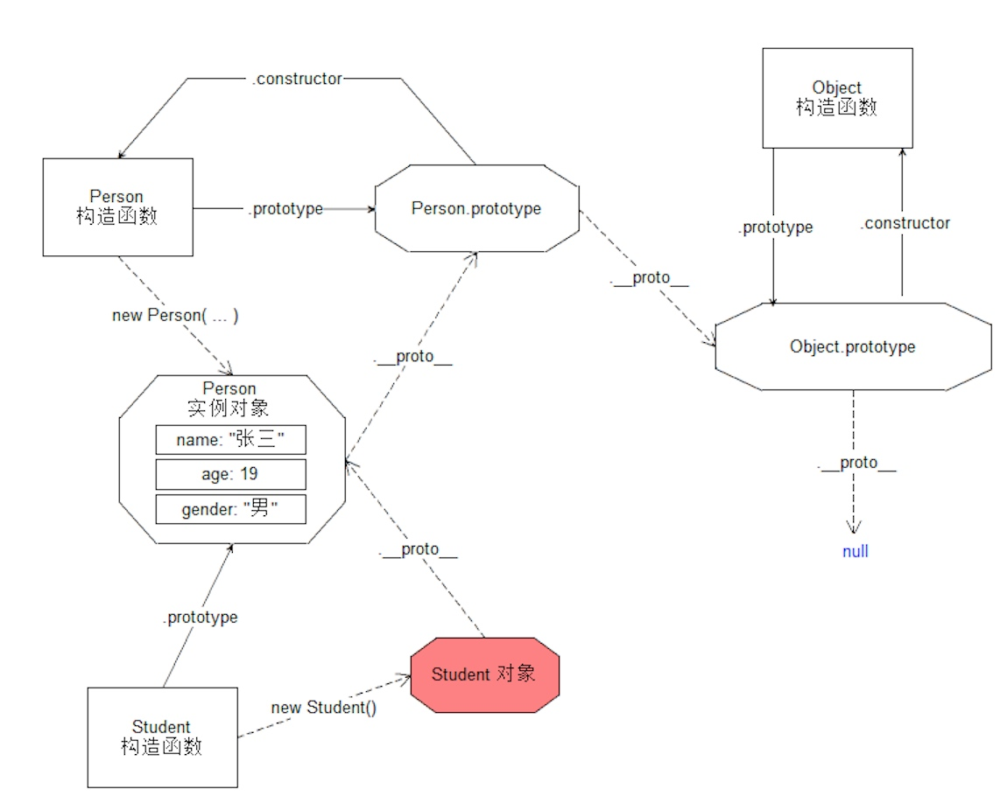
// 画出p1 p2的原型链结构
function Person() {}
var p1 = new Person();
var p2 = new Person();
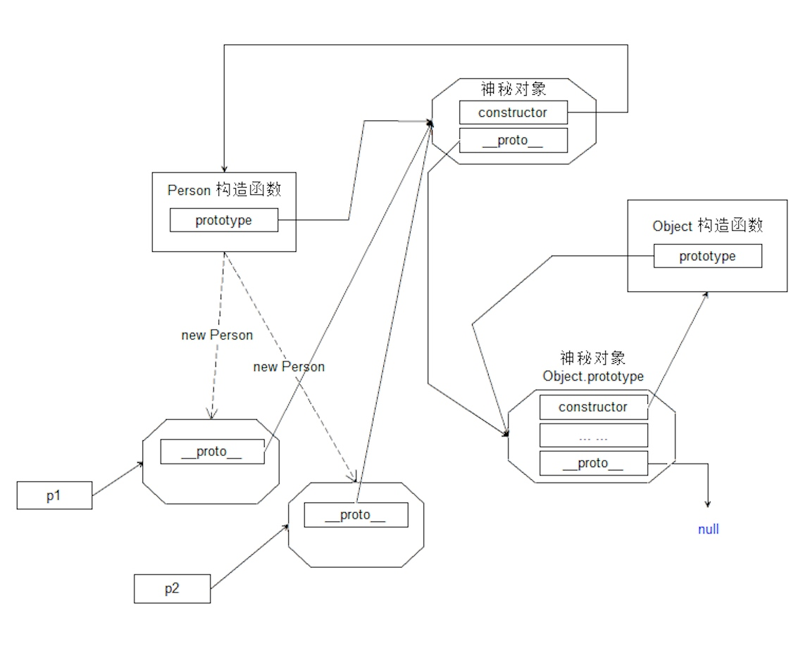
Function与动态函数
动态函数
动态函数就是在运行的过程中, 将一段字符串作为代码运行.由于字符串可以随意的拼接. 因此得到动态的执行.
创建动态函数
语法
new Function(arg0,arg1,...argN,functionBody); // Function的所有参数中,除了最后一个以外,都是生成的函数的参数,最后一个是生成函数的函数体案例
// 案例1: 求两个数字的和 // 传统做法 function getSum ( num1, num2 ) { return num1 + num2; } // 动态函数 var getSum2 = new Function ( 'num1', 'num2', 'return num1 + num2;' ); console.log(getSum2( 123, 456 ));
函数的相关参数
arguments
凡是函数调用, 都会默认含有一个
arguments对象. 可以将其看做为 "数组". 里面存储着调用时传入的所有参数. 可以使用数组的索引访问这些参数.
// 求和
function sum () {
// 所有的参数都会存储到 arguments 中
var sum = 0;
for ( var i = 0; i < arguments.length; i++ ) {
sum += arguments[ i ];
}
return sum;
}
console.log( sum( 1, 4, 2, 7, 5, 9 ) );
改写extend函数
// 混入式继承 function extend() { var args = arguments; if ( args.length == 1 ) { // 混入到 this 中 for ( var k in args[ 0 ] ) { this[ k ] = args[ 0 ][ k ]; } } else { // 混入到 argu...[ 0 ] 中 for ( var k in args[ 1 ] ) { args[ 0 ][ k ] = args[ 1 ][ k ]; } } }
length
定义函数时形参的个数,通过函数名.length访问
name
函数名,通过函数名.name访问
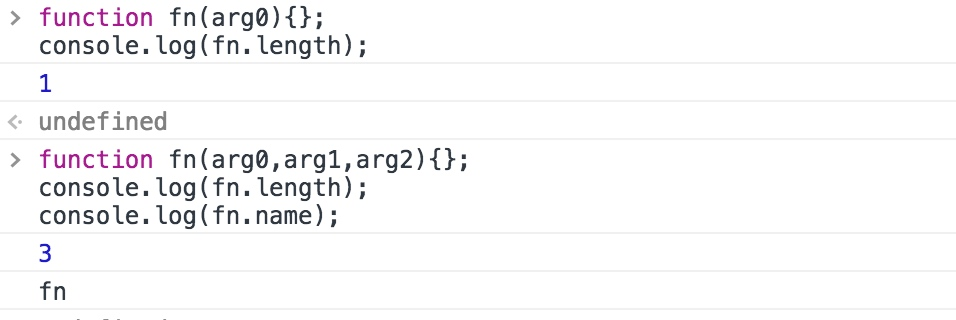
函数的引用
js中的函数也是一个对象
callee在函数内部,表示当前函数的引用caller表示调用函数的函数
callee:当前函数的引用
// 1. callee
// 语法: arguments.callee
// 当前函数的引用
/*
function foo () {
console.log( arguments.callee === foo );
}
foo();
// 一般在函数内部, 实现函数递归的时候, 我们一般使用 callee 表示函数的引用
// 传统的递归方法
function fn () {
fn(); // 自己调用自己
}
fn();
// 新的方法
function fn() {
arguments.callee(); // 使用 callee 来递归
}
fn();
*/
caller:调用该方法的函数 的 调用函数
// 2. caller 表示调用函数
// 语法: 函数名.caller
function f2 () {
console.log( f2.caller );
}
function itcast() {
f2();
}
itcast();
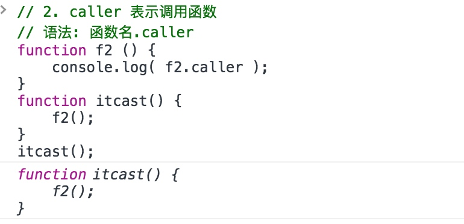
evel函数
直接将字符串当做代码执行 通过
evel函数执行的代码中的变量会和当前代码处于同一作用域,谨慎使用
eval( 'var num = 123;' );
eval( 'console.log( num );');
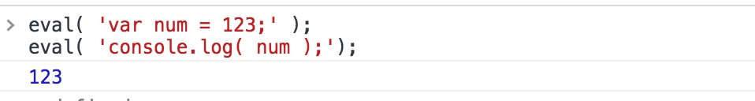
json字符串转换为对象
// 1. eval 做法
var o1 = eval( "(" + data + ")" ); // 注意一个习惯. 就是数据两端一般加上圆括号为好
// 2. Function 做法
var o2 = (new Function( 'return ' + data ))();
// 3. 使用 ES5 中引入的标准处理 JSON 的语法
// JSON.parse( )
// 注意: 字符串必须是严格是 json 格式
var o3 = JSON.parse( data );
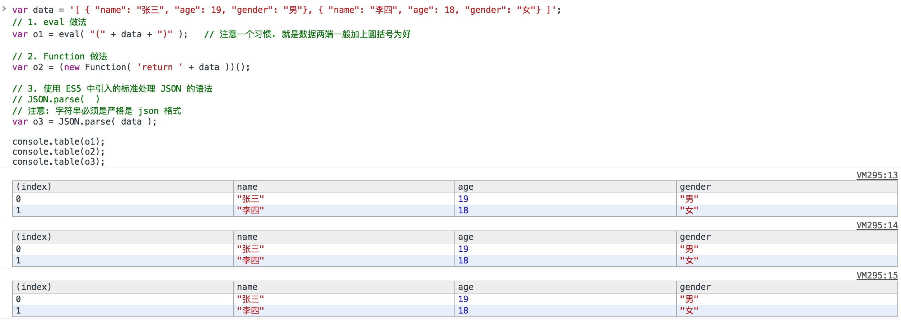
函数的原型链
函数是Function的实例
函数也是一个对象,
Function是函数的构造函数
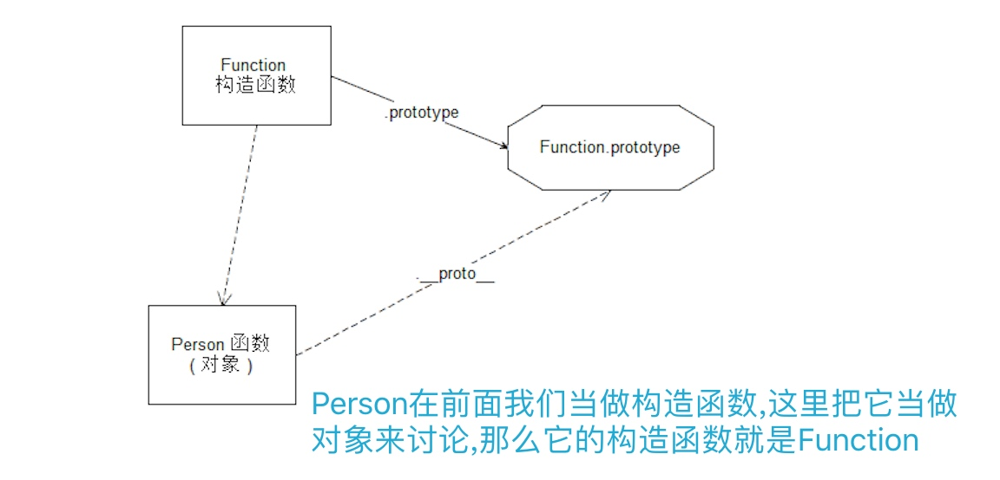
Function是Function自己的实例
Function本身就是一个函数,而函数是Function的实例,所以说Function是Function自己的实例
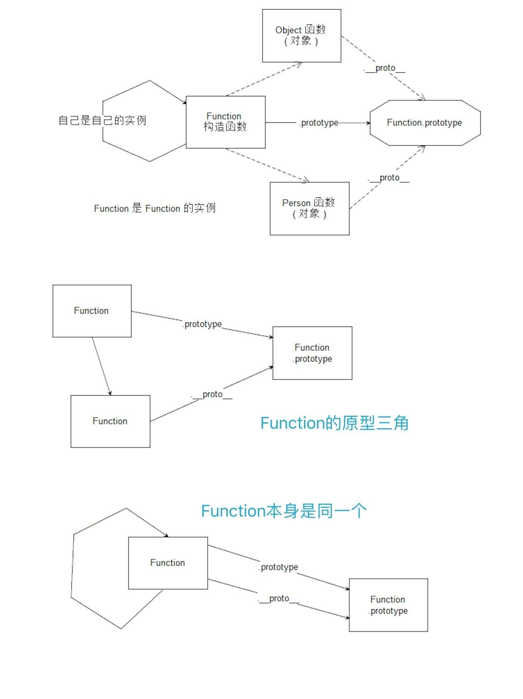
函数的原型链
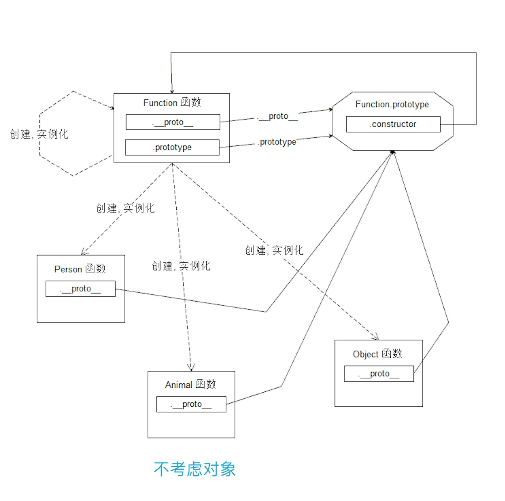
函数和对象完整原型链
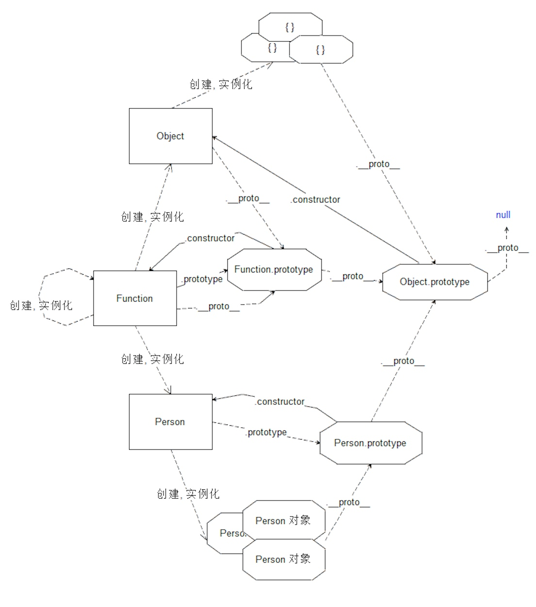
instanceof语法
判断该对象是否为 构造函数 的 实例判断 构造函数的 原型属性 是否在对象的原型链上
function Person () {}
var p1 = new Person();
// 按照原有的原型结构来创建
// p1 -> 原来的 Person.prototype -> Object.prototype -> null
// 设置原型
Person.prototype = {};
console.log( p1 instanceof Person ); // 判断 {} 是否在 p1 的原型链上
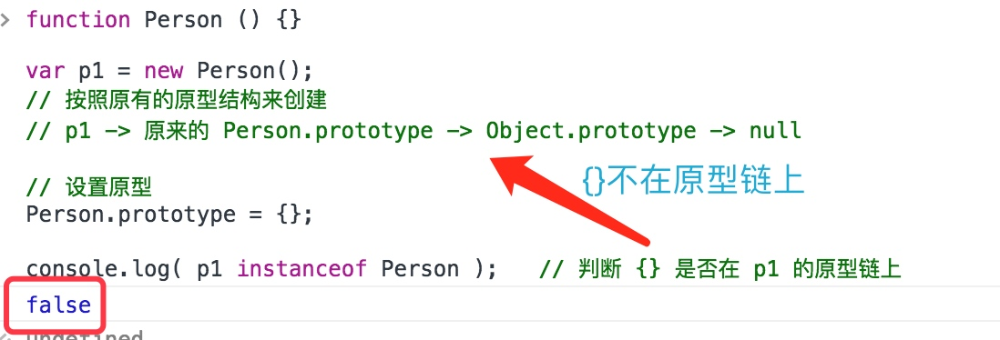
function Person () {}
// 设置原型
Person.prototype = {};
var p1 = new Person();
// 按照现在的原型链创建
// p1 -> 新的 Person.prototype. 即 {} -> Object.prototype -> null
console.log( p1 instanceof Person ); //判断 {} 是否在 p1 的原型链上
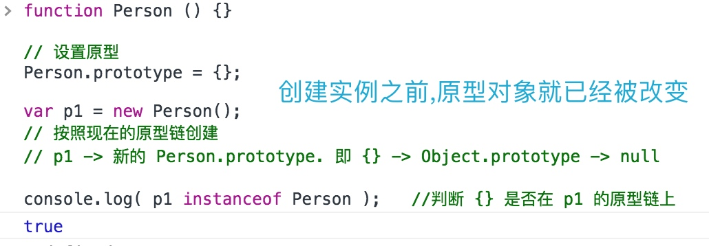